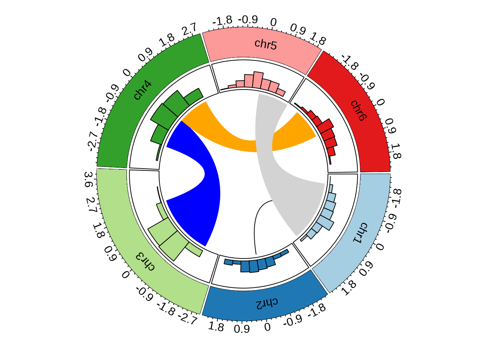
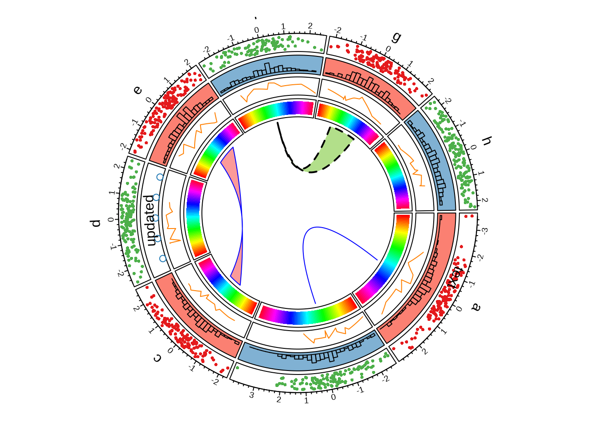

32 Cheatsheet for ‘circlize’ package
Yanhao Ren
- A quick glance:
col<-RColorBrewer::brewer.pal(6,"Paired")
df<-data.frame(chr=sample(c(paste0("chr",1:6)),1000,replace = T),
x=rnorm(1000),
y=rnorm(1000))
head(df)## chr x y
## 1 chr5 -0.0689864 -0.86958498
## 2 chr6 0.3735874 -0.08890751
## 3 chr6 -0.6632499 -0.83934530
## 4 chr4 0.3514712 0.51804746
## 5 chr6 0.1502522 -0.18407308
## 6 chr2 0.4782594 0.64462589
circos.initialize(factors = df$chr,x=df$x)
circos.trackPlotRegion(factors = df$chr,y=df$y,
panel.fun = function(x,y){
circos.axis()
})
for(i in 1:6){
highlight.sector(sector.index = paste0("chr",i),col=col[i])
circos.text(CELL_META$xcenter, CELL_META$ycenter,
labels = paste0("chr",i),sector.index = paste0("chr",i))
}
circos.trackHist(df$chr,df$x,col=col)
circos.link("chr1",0,"chr2",0)
circos.link("chr4",c(-2,0),"chr3",c(-2,2),col="blue")
circos.link("chr4", c(0, 2), "chr6", c(-2, 0), col = "orange")
circos.link("chr5", c(0, 2), "chr1", c(-2, 2), col = "lightgrey")
- More circlize plots:
#dataset:
n <- 1000
df <- data.frame(
sectors = sample(letters[1:8], n, replace = TRUE),
x = rnorm(n), y = runif(n)
)
#first step:
circos.par("track.height" = 0.1)
circos.initialize(df$sectors, x = df$x)
circos.track(df$sectors, y = df$y,
panel.fun = function(x, y) {
circos.text(CELL_META$xcenter,
CELL_META$cell.ylim[2] + mm_y(7),
CELL_META$sector.index)
circos.axis(labels.cex = 0.6)
})
col <- rep(c("#e41a1c", "#4daf4a"), 4)
circos.trackPoints(df$sectors, df$x, df$y, col = col, pch = 16, cex = 0.5)
circos.text(-1, 0.5, "text", sector.index = "a", track.index = 1)
#next step:
bgcol <- rep(c("#fb8072", "#80b1d3"), 4)
circos.trackHist(df$sectors, df$x, bin.size = 0.2, bg.col = bgcol, col = NA)
#next step:
circos.track(df$sectors, x = df$x, y = df$y,
panel.fun = function(x, y) {
ind = sample(length(x), 12)
x2 = x[ind]
y2 = y[ind]
od = order(x2)
circos.lines(x2[od], y2[od], col = "#ff7f00")
})
#next step:
circos.update(sector.index = "d", track.index = 2,
bg.col = "white", bg.border = "black")
circos.points(x = -2:2, y = rep(0.5, 5), col = "#1f78b4")
circos.text(CELL_META$xcenter, CELL_META$ycenter, "updated", col = "black")
#next step:
circos.track(ylim = c(0, 1), panel.fun = function(x, y) {
xlim = CELL_META$xlim
ylim = CELL_META$ylim
breaks = seq(xlim[1], xlim[2], by = 0.1)
n_breaks = length(breaks)
circos.rect(breaks[-n_breaks], rep(ylim[1], n_breaks - 1),
breaks[-1], rep(ylim[2], n_breaks - 1),
col=rainbow(n_breaks),
border = NA)
})
#next step:
circos.link("a", 0, "b", 0, h = 0.4, col = "blue")
circos.link("c", c(-0.5, 0.5), "e", c(-0.5,1),
col = "#fb9a99", border = "blue", h = 0.2)
circos.link("f", 0, "g", c(-1,1), col = "#b2df8a",
border = "black", lwd = 2, lty = 2)